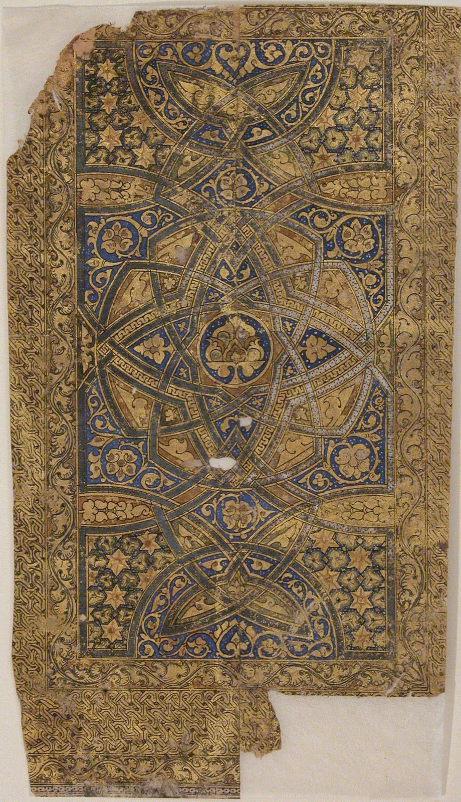
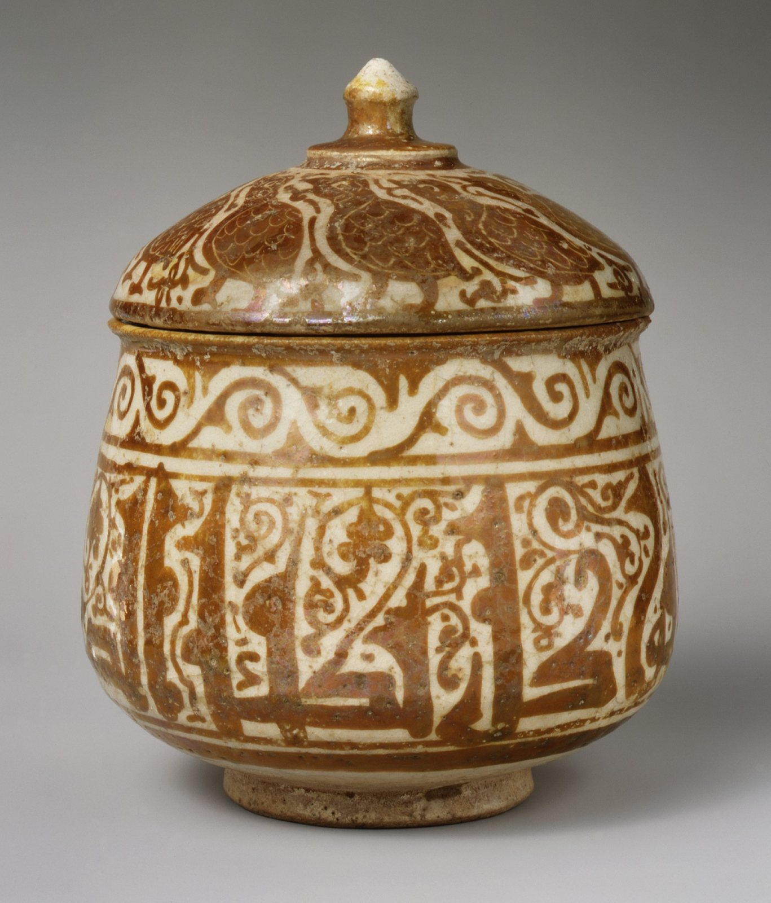

今日一句话总览
过去 72 小时的主线，是文化机构同时面对“扩容”与“脆弱性”：网络艺术被系统纳入博物馆史，跨国馆藏借展与亚洲双年展继续扩张，但战争中的遗产损毁、公共博物馆免费政策以及机构改造成本也更趋紧迫。与此同时，AI 正从图像生成工具转向工作流入口、鉴伪基础设施和竞赛规则问题。
信息来源与检索范围
- 检索时间：2026-08-07 09:00–09:24（中国标准时间，UTC+8；对应 UTC 01:00 起）。
- 覆盖地区：北美、欧洲、东亚、东南亚、非洲、中东及拉丁美洲；本期有效新增以美国、英国、法国、意大利、韩国、中国、菲律宾、南非、巴西、土耳其/乌克兰为主。
- 主要来源：Whitney、MoMA、Smithsonian、UCCA、La Biennale、Frieze、Ars Electronica 等机构页；Artforum、The Art Newspaper、ARTnews、Hyperallergic、Artnet News、ArtAsiaPacific、Ocula、K-ARTNOW 等媒体。通过 Google News RSS 以来源名、标题和可见发布时间复核，并优先采用机构原始页。
- 时间范围：头条与动态优先过去 24–72 小时（8 月 4–7 日）；为补足全球展讯，少量扩展至过去 7 天（7 月 31 日起），均在条目中标明。
- 访问失败 / 不确定项：Google 网页搜索多次超时；Smithsonian 与 Frieze 原文页触发 403/Cloudflare，但其标题、发布时间已由 Google News RSS 核验，并用 The Art Newspaper/Artforum 等交叉参考。部分尚未开放的展览未在聚合摘要中显示闭展日，本文不推定，标为“待机构更新”。Google News 的“发布时间”是聚合可见时间，可能与机构页面首次上线时间略有差异。
开放图像说明
- 配图 1：《古兰经手稿页》，1137年；The Metropolitan Museum of Art Open Access，Public Domain。
- 配图 2：伊斯兰陶质圆盒，11世纪晚期至12世纪初；The Metropolitan Museum of Art Open Access，Public Domain。
- 两图用于补充本期“伊斯兰艺术公共叙事”主题，不是新闻事件现场照片。
一、必看头条（4 条）
1. 俄军无人机摧毁乌克兰一座约 300 年历史的木结构哥萨克教堂
- 地区 / 机构：乌克兰；文化遗产保护
- 来源：The Art Newspaper
- 时间：2026-08-06 00:49（北京时间；源可见时间 8 月 5 日 16:49 UTC）
- 事件摘要：The Art Newspaper 报道，一座具有独特价值、约 300 年历史的木结构哥萨克教堂遭无人机摧毁。
- 为什么重要：这不是可逆的“建筑受损”，而是材料、工艺、宗教生活与地方记忆的共同断裂；也再次显示文化遗产数字建档不能等到危机发生后才启动。
- 可延伸观察：关注现场损毁评估、战前测绘/影像档案是否足以支持重建，以及国际文化遗产应急资金如何介入。
2. 卢浮宫伊斯兰艺术珍品将赴史密森尼展出
- 地区 / 机构：法国巴黎—美国华盛顿；卢浮宫、Smithsonian
- 来源：Smithsonian 官方新闻页；交叉参考：The Art Newspaper
- 时间：官方消息 2026-08-05（RSS 首次可见 8 月 4–5 日）
- 事件摘要：卢浮宫将一批伊斯兰艺术代表作借予史密森尼展出，形成跨大西洋重要馆藏合作。
- 为什么重要：借展不仅是“名作移动”，也是分类史和叙事权的再配置；伊斯兰艺术在美国公共博物馆中的呈现方式，会影响观众如何理解跨区域贸易、技术与宗教文化。
- 可延伸观察：最终展品清单、借展保险与保护条件，以及是否引入当代穆斯林社群共同诠释。
3. Whitney 以 25 年 artport 项目书写互联网艺术史
- 地区 / 机构：美国纽约；Whitney Museum of American Art
- 来源：Whitney 展览页；官方新闻稿
- 时间：消息更新 2026-08-06；展览 2026-11-21 开幕
- 事件摘要：展览纪念 Whitney 网络画廊 artport 于 2001 年上线 25 周年，将在线与实体展厅结合，呈现超过 100 件为 artport 委任的作品。
- 为什么重要：互联网艺术从“边缘媒介”进入馆藏史与展览史，但真正难题是旧浏览器、插件、服务器与交互逻辑如何保存，而不是只保留截图。
- 可延伸观察：机构会采用仿真、迁移还是重演策略；观众能否访问作品的历史版本及其技术上下文。
4. Frieze London 与 Frieze Masters 2026 强调“艺术家居于中心”
- 地区 / 机构：英国伦敦；Frieze
- 来源：Frieze 官方页
- 时间：2026-08-07 02:11（北京时间；源可见时间 8 月 6 日 18:11 UTC）
- 事件摘要：Frieze 公布 2026 年伦敦两展的新内容，传播重点从画廊名单进一步转向艺术家项目及策展式呈现。
- 为什么重要：大型艺博会正在借用双年展和机构展览的叙事方法，以回应观众对“只看交易展位”的疲劳。
- 可延伸观察：艺术家中心化是否落实到费用、制作支持和版权安排，而非仅是营销语言。
二、最新展览与展讯（7 条）
1. “artport: A History of Internet Art”
- 地点 / 时间：Whitney，纽约；2026-11-21 开幕，闭展日待机构更新。
- 来源：Whitney（8 月 6 日更新）
- 主题与亮点：以线上、线下双重形态回顾 25 年网络艺术，超过 100 件委任项目构成少见的机构连续档案。
- 适合关注：数字艺术家、新媒体保存研究者、博物馆数字部门与媒介史课程。
2. “It’s Alive! A Century of Animation from the Collection”
- 地点 / 时间：MoMA，纽约；展讯 2026-08-01 发布，具体展期以馆方页面为准。
- 来源：MoMA（Google News 核验入口）
- 主题与亮点：以馆藏梳理一个世纪的动画，把动画从儿童娱乐重新放回实验影像、设计、电影工业与视觉技术史。
- 适合关注：动画创作者、影像策展人、视觉传达和电影教育者。
3. 2026 济州双年展公布最终艺术家阵容
- 地点 / 时间：Jeju Museum of Art，韩国济州；阵容消息 2026-08-04 可见，双年展具体日期以官网为准。
- 来源：Artforum
- 主题与亮点：最终名单落定意味着策展框架进入可检验阶段；济州的岛屿地理、生态和迁徙史可望成为区别于都市双年展的观察坐标。
- 适合关注：亚洲双年展研究者、生态与岛屿议题创作者、区域文化政策观察者。
4. “NEXTCODE 2026: Glissando, Glissandi”
- 地点 / 时间：Daejeon Museum of Art，韩国大田；展至 2026-09-27。
- 来源：K-ARTNOW（8 月 4 日可见）
- 主题与亮点：“滑音”的复数形式暗示作品在声音、图像与媒介间连续过渡，为理解韩国青年/新锐艺术生态提供入口。
- 适合关注：声音与影像艺术家、跨媒介课程教师、韩国当代艺术研究者。
5. “The File Cannot Be Restored”
- 地点 / 时间：THK Gallery，南非开普敦；2026-08-06 至 10-06。
- 来源：Ocula（8 月 6 日）
- 主题与亮点：标题直指档案缺失、数字损坏和记忆不可逆，适合与当下数字保存及南非历史书写并置阅读。
- 适合关注：档案艺术、摄影、后殖民研究与数字记忆方向的创作者和策展人。
6. “As One Draws｜TSCA 20th Anniversary Group Exhibition”
- 地点 / 时间：Takuro Someya Contemporary Art，日本；8 月 6 日发布，展期以画廊页为准。
- 来源：Frieze Galleries
- 主题与亮点：以群展回看画廊 20 年轨迹，绘画/绘制行为既是媒介也是机构史线索。
- 适合关注：画廊运营者、绘画研究者及关注中型机构长期艺术家关系的人。
7. “There Are No Words: Si Lewen’s Parade”
- 地点 / 时间：The Met，纽约；8 月 1 日前后发布，具体展期以馆方为准（本条使用 7 天扩展窗口）。
- 来源：The Metropolitan Museum of Art
- 主题与亮点：围绕西·莱文受二战前后经历塑造的连续绘画《Parade》，以无文字图像序列讨论战争、循环暴力与见证。
- 适合关注：绘本/连环叙事创作者、战争记忆研究者、博物馆教育者。
三、艺术事件 / 机构动态 / 市场与政策（5 条）
1. 巴黎东京宫计划 2027 年闭馆改造，临时场地引发争议
- 地区 / 机构：法国巴黎；Palais de Tokyo
- 来源：Artforum
- 时间：2026-08-04 02:32（北京时间）
- 动态与意义：大型当代艺术机构改造牵动员工、艺术家、观众和城市资源；临时空间并非单纯搬迁，而会改变项目规模、可达性与劳动条件。
2. 伦敦市长萨迪克·汗呼吁公共博物馆继续免费
- 地区 / 机构：英国伦敦；市政府与公共博物馆
- 来源：The Art Newspaper
- 时间：2026-08-04
- 动态与意义：免费入场是文化平权工具，却把压力转移到公共拨款、会员、商业收入和特展票务；政策表态之后仍需看财政机制。
3. 首届 Art Week NYC 公布 76 家参与画廊
- 地区 / 机构：美国纽约；Art Week NYC
- 来源：ARTnews
- 时间：2026-08-05 00:50（北京时间）；活动指向 11 月
- 动态与意义：城市级艺术周继续增多，画廊以联合日历、路线与公共项目争夺注意力；其成败取决于能否把流量带给非核心街区和中小画廊。
4. White Cube 宣布代理埃塞俄比亚艺术家 Tesfaye Urgessa
- 地区 / 机构：英国/国际；White Cube
- 来源：ARTnews
- 时间：2026-08-06
- 动态与意义：顶级画廊扩大非洲及侨民艺术家布局，会提高机构曝光与市场流动性，也需观察代理后作品供应、定价与博物馆进入节奏。
5. 巴西收藏家 Bernardo Paz 推进新博物馆计划
- 地区 / 机构：巴西；Bernardo Paz
- 来源：Artforum
- 时间：2026-08-05 02:23（北京时间）
- 动态与意义：私人收藏向公共机构转化能补充拉美文化基础设施，但治理、资金可持续性和收藏者个人影响力应与建筑规模同等审视。
四、技术、知识与新观念（5 条）
1. Adobe 把创作与编辑工具接入 ChatGPT
- 来源：Adobe
- 时间：2026-08-06
- 新内容：Adobe 发布“Adobe for ChatGPT”，强调在对话环境中创建、编辑并完成工作。
- 启发：生成式 AI 的竞争点正在从单张图质量转向“入口与工作流所有权”。创作者应记录模型、素材来源、编辑步骤与最终人工判断，避免过程被一个聊天窗口抹平。
2. AI 鉴伪初创公司进入艺术品真伪判断链
- 来源：ARTnews Morning Links
- 时间：2026-08-05
- 新内容：ARTnews 汇总一项用 AI 处理艺术品伪作问题的新创业动向。
- 启发：AI 可以做纹理、材料图像和大样本异常筛查，但不能替代出处链、材料科学与专家责任；关键是误判由谁承担、模型训练集是否可审计。
3. AI 作品获奖争议把“披露义务”推到前台
- 来源：NBC4：Ohio State Fair 海报争议
- 时间：2026-07-31（7 天扩展窗口）
- 新内容：俄亥俄州博览会竞赛中的 AI 海报获奖引起争论。
- 启发：教育与竞赛不应只问“能否使用 AI”，而应规定披露、过程文件、训练/参考素材、人工贡献与独立组别。
4. Ars Electronica 连续发布“新世界”“水之声”与未来宣言
- 来源：A Glimpse into New Worlds；Hello Futures Manifesto
- 时间：2026-08-06
- 新内容：Ars Electronica 的近期内容继续把艺术、环境感知和未来想象并置。
- 启发：科技艺术展示若只突出设备会迅速过时；把水、声音、生态与公共未来作为可感知关系，才可能建立长期议题。
5. 《Art Cure》讨论艺术的疗愈能力
- 来源：The Art Newspaper
- 时间：2026-08-04
- 新内容：新书从研究与案例角度分析艺术的疗愈潜力。
- 启发：艺术教育和社会参与项目可以讨论身心健康，但应区分审美支持、社会联结与临床治疗，避免把“疗愈”当成无证据的万能宣传词。
五、今日组合观察
- **博物馆正在把“数字原生作品”从项目升级为历史。** Whitney 的 artport 25 周年展与 MoMA 的百年动画馆藏展共同说明：机构不再只展示技术新奇，而在建立媒介谱系。前者还迫使保存部门面对服务器、代码与交互行为的保存。
- **艺术机构的公共性越来越依赖基础设施与财政设计。** 伦敦免费博物馆之争、巴黎东京宫闭馆改造、巴西新博物馆计划分别从票价、建筑和私人资本三个方向提出同一问题：谁支付公共文化的长期成本？
- **艺博会和艺术周在“策展化”。** Frieze 强调艺术家项目，纽约首届 Art Week 汇集 76 家画廊，都试图把交易平台包装为城市文化体验；下一步应看艺术家报酬与中小机构是否真正受益。
- **AI 的制度问题已超过图像质量问题。** Adobe 接入 ChatGPT、AI 鉴伪创业与州博览会海报争议，分别对应工作流控制、证据可信度和竞赛规则。行业需要的已不是一句“支持/反对 AI”，而是可审计流程。
- **战争与档案缺失让“不可恢复”成为现实主题。** 乌克兰木教堂被毁与开普敦“The File Cannot Be Restored”虽一实一展，却共同提醒：物理遗产与数字档案都存在不可逆损失，预防性记录必须先于灾难。
六、给创作者 / 策展人 / 艺术教育者的启发
- **给创作者：** 为数字作品建立最小保存包：源文件、依赖版本、运行环境、操作录像、作品说明与授权边界；使用生成式 AI 时保留提示、输入素材、版本和人工修改记录。也可从“滑音”“不可恢复”“水之声”等议题出发，让媒介转换本身成为作品结构。
- **给策展人 / 空间运营者：** 在项目预算中单列数字保存、无障碍、艺术家费用和撤展后归档；做临时空间或城市艺术周时，不只统计客流，还应跟踪观众跨区流动、中小机构转化率与艺术家实际收益。跨国借展则要提前设计多社群共同诠释，而非仅借名作制造流量。
- **给艺术教育者：** 把 AI 作业规则写成可执行量表：是否披露、过程证据、素材权利、人工判断与反思；用 Whitney 的网络艺术档案和 MoMA 动画展做“媒介如何老化”的课程；讨论艺术疗愈时明确它与临床治疗的界线。
七、今日可收藏链接
- Whitney：artport: A History of Internet Art — 网络艺术 25 年机构史与数字保存案例。
- Whitney 官方新闻稿 — 超过 100 件委任作品及线上/线下展览框架。
- Smithsonian：卢浮宫伊斯兰艺术珍品赴美 — 跨馆借展与伊斯兰艺术公共叙事的重要案例。
- The Art Newspaper：乌克兰木结构教堂被毁 — 战时文化遗产应急保护的紧迫个案。
- Frieze London / Masters 2026 — 观察艺博会“艺术家中心化”的具体方案。
- Artforum：2026 济州双年展最终名单 — 亚洲岛屿型双年展追踪入口。
- Ocula：The File Cannot Be Restored — 从南非语境观察档案、损坏与记忆。
- MoMA：百年动画馆藏展 — 动画、设计与实验影像史课程资源。
- Adobe for ChatGPT — 生成式工具从应用转向对话式工作流入口。
- The Art Newspaper：伦敦公共博物馆免费政策 — 公共文化可达性与财政可持续性讨论。
- ARTnews：艺术市场的“遗产争夺” — 艺术家遗产管理正重塑画廊与市场竞争。
- Ars Electronica：Hello Futures Manifesto — 科技艺术如何把未来想象转为公共议题。
八、明日追踪建议
- **乌克兰教堂损毁后续：** 等待文化部门现场评估、文物清单与数字测绘资料情况。
- **Frieze London / Masters 细则：** 核对艺术家项目名单、委任费用和特殊展区是否公布。
- **济州双年展：** 补齐官方主题、完整名单、场地和开闭幕日期，观察亚洲及全球南方比例。
- **Adobe for ChatGPT：** 追踪可用地区、账户权限、素材是否用于训练，以及 Content Credentials 是否随工作流保留。
- **卢浮宫—Smithsonian 借展：** 继续核对展期、展品清单、策展团队与社群诠释方案。